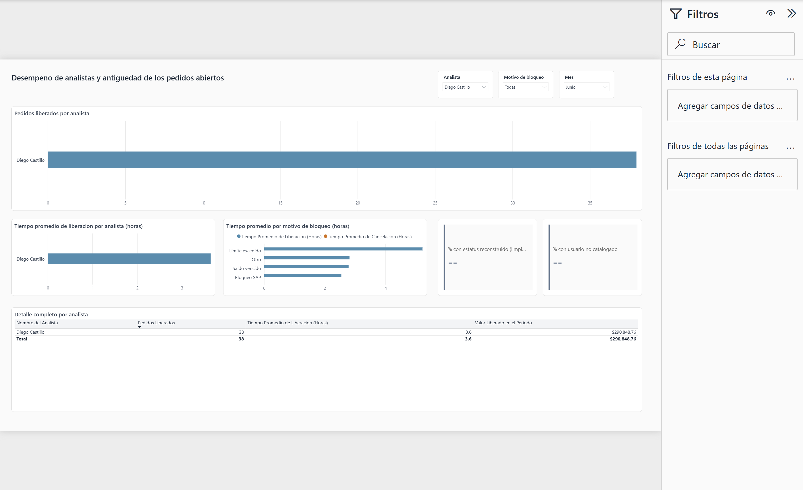

El problema
Cuando un pedido se bloquea por motivos de crédito, entra a un "pool" hasta que un analista lo libera o se cancela. El equipo necesita saber tres cosas en todo momento: cuántos pedidos siguen atorados, qué tan rápido se están resolviendo, y si el backlog está creciendo o disminuyendo. Sin eso, un pedido puede quedarse en revisión durante semanas sin que nadie lo note.
El dataset
Los datos reales de la empresa no se pueden publicar, así que este repositorio usa un generador sintético que reproduce la misma forma y las mismas inconsistencias que tenían los datos originales: 3,712 pedidos en 180 días, 200 clientes, 10 analistas de crédito, un motivo de bloqueo no equiprobable (límite excedido es el más común, como en el negocio real), un lote de pedidos con estatus fuera de catálogo en las primeras dos semanas (simula un problema real de captura que hubo que resolver en Silver, no descartar), y formato de usuario inconsistente para mostrar la limpieza real que hace la capa Silver. Semilla fija: correr el generador dos veces produce exactamente los mismos datos.
¿Por qué DuckDB y no SQL Server?
La versión original corría contra SQL Server con un linked server hacia MariaDB — fiel al entorno real de la empresa, pero imposible de clonar y correr para cualquiera que revise el repositorio. DuckDB no necesita instalación ni infraestructura, corre localmente desde un solo archivo, y su sintaxis SQL es lo bastante cercana a T-SQL para que la lógica de negocio se tradujera casi directo. Para el volumen de este proyecto (algunos miles de filas) no hay razón para algo más pesado.
Arquitectura y decisiones técnicas
Python (datos sintéticos)
│
▼
Bronze (DuckDB, todo VARCHAR, nada limpio)
│
▼
Silver (tipado, estatus reconstruido, un registro por pedido)
│
▼
Gold (star schema: 5 dimensiones + 2 hechos)
│
▼
Power BI (modelo semántico + 2 páginas de reporte)
Bronze carga las tres tablas fuente tal cual, todo como texto — si algo llega mal formado desde el origen, aquí debe seguir viéndose mal formado; esa disciplina es lo que le da a Silver trabajo real y verificable que hacer.
Silver resuelve dos cosas que la versión original manejaba mal: el
estatus inválido ya no se descarta al extraer (como hacía la versión original,
perdiendo esos pedidos para siempre) sino que se reconstruye a partir de las fechas de
liberación/cancelación, marcando cuáles fueron reconstruidos en vez de ocultarlo. Y el
antiguo IFNULL(v.nombre, 'Sistema'), que mezclaba dos casos distintos bajo
la misma etiqueta (pedido aún no liberado vs. liberado por alguien fuera del catálogo de
analistas), ahora son dos campos separados — el segundo expuesto como medida de calidad
de datos en el dashboard en vez de ocultarse.
Gold reemplaza el TRUNCATE + INSERT del diseño original
(que servía para ver el estado actual del pool, pero hacía imposible ver cómo
había evolucionado) dividiendo dos grains distintos en dos tablas de hechos:
fact_pedido_pool (un registro por pedido) y
fact_pool_snapshot_diario (un registro por día con el estado del pool ese
día — la tabla que resuelve el problema de historia, agregando una fila por día sin
nunca truncar).
KPIs y preguntas de negocio
| Pregunta | KPI / medida |
|---|---|
| ¿Cuántos pedidos siguen atorados ahora mismo? | Pedidos en Pool al Cierre |
| ¿El backlog crece o disminuye? | Tendencia diaria |
| ¿Qué proporción termina cancelada en vez de liberada? | % Pedidos Cancelados (semáforo) |
| ¿Qué tan antiguos son los pedidos sin resolver? | Antigüedad Promedio del Pool (semáforo) |
| ¿Qué tan confiables son los datos? | % Estatus Reconstruido, % Usuario No Catalogado |
Dashboard
Segunda página — Analistas y antigüedad: ranking de pedidos liberados por analista, tiempo promedio de liberación, comparación de tiempos por motivo de bloqueo, y las dos medidas de calidad de datos. Con slicers de Analista, Motivo y Mes.

Bugs reales encontrados construyendo esto
- Una medida y una columna con el mismo nombre (distinto solo en mayúsculas) en la misma tabla — Power BI no distingue mayúsculas para esto y el modelo se negaba a cargar. Se resolvió renombrando la columna origen.
- Un KPI mal etiquetado: una tarjeta decía "pedidos liberados por
día" pero en realidad sumaba todo el periodo seleccionado — dos cosas muy distintas.
Hubo que construir una medida de promedio real (
AVERAGEXsobre el calendario). - Una tabla que no renderizaba, con un error genérico de "capacidad o
licencia". Se aisló probando 3 configuraciones distintas hasta confirmar que el único
constante era una medida con
CALCULATE(MAX(...), REMOVEFILTERS(...))anidado, que Power BI Desktop no resolvía bien dentro de esa tabla en particular.